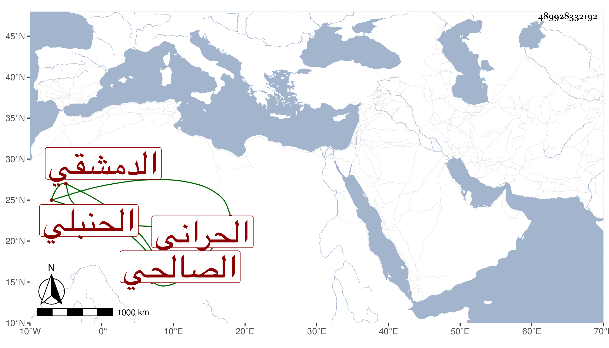

0902Sakhawi.DawLamic.ITO20230111-ara1.EIS1600.489928332192
Biography ID: 489928332192
247
محمد بن محمد بن عبادة بن عبد الغني بن منصور الشمس الحراني الاصل الدمشقي الصالحي الحنبلي والد الشهاب أحمد الماضي ويعرف بابن عبادة بضم العين . ذكره شيخنا في انبائه فقال : اشتغل كثيرا وأخذ عن الزين بن رجب ثم عن صاحبه ابن اللحام وكان ذهنه جيدا وخطه حسنا وكذا شكله مع البشاشة وحسن الملتقى ثم تعاني الشهادة فمر فيها وصار عين أهل البلد في معرفة المكاتيب مع حسن خطه ومعرفته وآل أمره إلى أن ولي القضاء بعد اللنك مرارا بغير أهلية فلم تحمد سيرته وكثرت في أيامه المناقلات في الاوقاف وتأثل لذلك مالا وعقارا وكان مع ذلك عريا عن تعصب الحنابلة في العقيدة . مات في رجب سنة عشرين وله سبع وخمسون سنة وقد غلب عليه الشيب .
